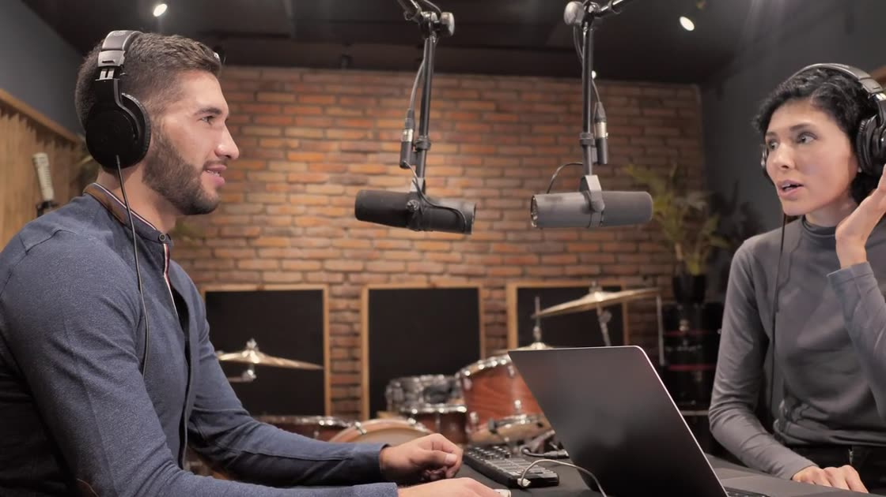
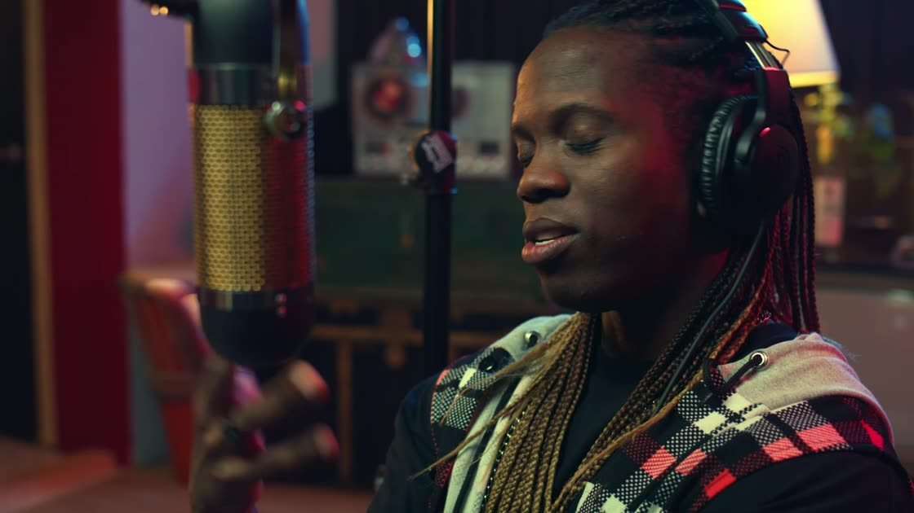
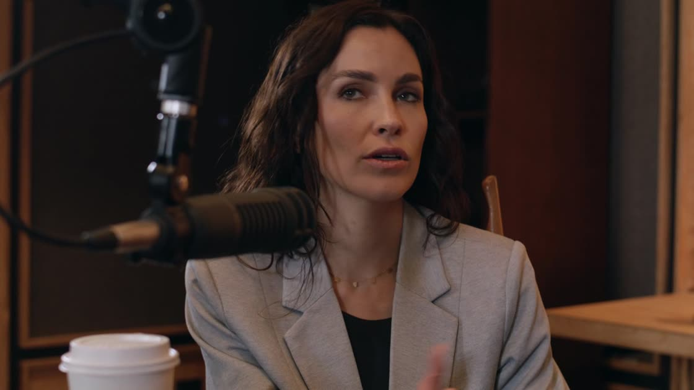
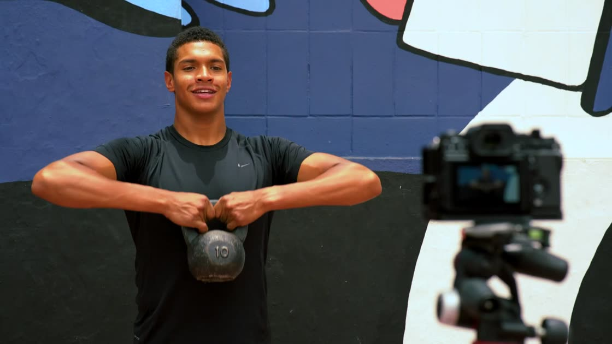

01
Drop in a video
Upload a file or paste a link. Pick the shape you want the clips in and, if you like, say what to look for.
AI video clipping
Cutline reads your podcast, interview or stream, finds the moments that stand alone, and cuts each one into a captioned vertical clip. You review, tweak and download.
or upload a file from your computer
Demo footage. The scores and times on these clips are examples.
How it works
Upload a file or paste a link. Pick the shape you want the clips in and, if you like, say what to look for.
It transcribes every word with timestamps. Then an AI editor reads the whole transcript and picks the passages that open strong and land a payoff.
Each clip arrives reframed and captioned, with a score and the reason it was picked. Fix a word, move the trim, change the style, download the MP4.
Features
9:16, 1:1, 4:5 or 16:9. Fill the frame and slide the crop onto your subject, or fit the whole picture over a blurred backdrop.
Three styles, timed to each spoken word and burned into the video so they play everywhere. Try them.
Every clip is rated for hook, flow, value and reach, with one sentence on why. It is an AI estimate to help you choose, not a forecast.
Add one line and the picks lean toward it.
Correct a misheard name, hide a filler word, nudge the trim. The clip re-renders with your changes.
A title and a ready-to-paste caption with hashtags come with each clip.
Know the moment you want? Type a start and end time and Cutline captions and frames it like the rest.
Video files stay on your computer. Only the audio goes out for transcription and the transcript for moment picking.
Who it's for
Cutline picks moments from what is said. If your video has a voice in it, there are clips in it.




Questions
Anything where people talk: podcasts, interviews, webinars, lessons, commentary, vlogs. Cutline picks moments from what is said, so a video with no speech gives it nothing to work with.
There is no fixed length limit. Long recordings are transcribed in 20-minute parts. Files up to 8 GB are accepted.
Transcription detects the language automatically, or you can set it. Captions are tested in Latin and Devanagari scripts. Other scripts rely on the fonts installed on this computer.
Not automatically yet. Fill mode crops to the centre and gives you a slider to move the crop onto your subject; Fit mode keeps the whole frame.
Cutline itself is yours. Each video uses your own API keys for transcription and for the AI that picks moments, billed by those providers.
Only clip video you own or have permission to use.